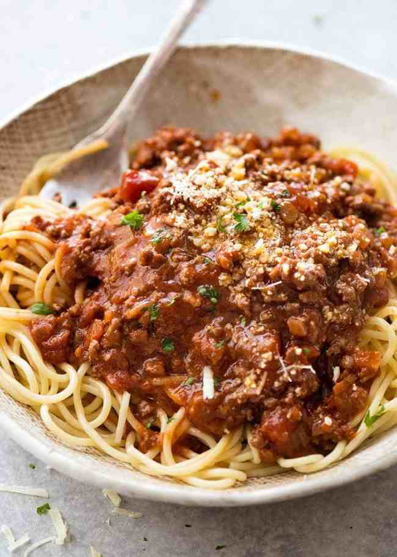

Spaghetti Bolognese

Description
Get ready for the Spaghetti that carried me through four months of backpacking across
Europe for four months! This is a very basic, very cheap, very biege Spaghetti Bolognese
which you'll be able to cook up in no time at all!
Ingredients
- 500g Mince Meat.
- 250g Large Spiral Pasta.
- One Jar of Dolmio Spaghetti Sauce.
- 50g of Lactose or Dairy Free Grated Cheese.
- Two Tablespoons of Salt.
- 5ml of Olive Oil.
Steps
- Fill a large pot with water and bring to the boil.
- Heat pan to medium high and add oil once hot.
- Once water is boiling, and 250g of Large Spiral Pasta and set a timer for 12 minutes.
- While the pasta is boiling, add in your mince and begin to break up and cook till brown.
- Once brown, add in jar of Dolmio Spaghetti Sauce.
- Turn down heat and leave sauce to simmer till pasta finishes cooking.
- Once pasta is done, drain and add to a bowl with spaghetti sauce and cheese!